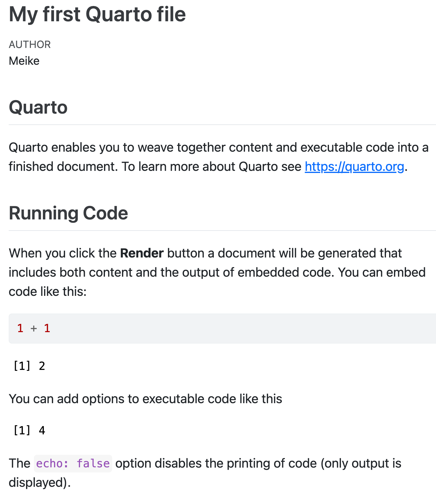

install.packages(c("palmerpenguins", "tidyverse", "gt", "countdown"))Part 1: Workshop Overview
OCTRI-BERD Workshop July 2025
Welcome! 👋
This workshop will teach you how to create professional presentations and websites using Quarto, an open-source scientific and technical publishing system that builds on R Markdown.
Workshop Goals:
- Understand the power of Quarto for reproducible reporting.
- Learn to create dynamic HTML presentations.
- Build and customize a personal or project website.
- Gain confidence in using Quarto for your own projects.
Who we are

Jessica Minnier
Associate Professor of Biostatistics
Meike Niederhausen
Associate Professor of Biostatistics
@meike-niederhausen
@niederhausen
ohsu-psu-sph.org
niederha [at] ohsu [dot] edu
Logistics
- Thurs, July 17: 1:00 pm - 2:30 pm
- Part 1
- Begin Part 2 (Presentations)
- Tues, July 22: 1:00 pm - 2:30 pm
- Finish Part 2 (Presentations)
- Part 3 (Websites)
- Please ask questions!!
Part 0: Installation
Before we begin, please ensure you have the following installed:
- R: A recent version of R is required. You can download it from the Comprehensive R Archive Network (CRAN).
- RStudio: Download the latest version from the RStudio website. Quarto is built right into RStudio, making it the easiest way to get started. If you have Rstudio already installed, RStudio v2022.07 and later includes support for editing and preview of Quarto documents, and we highly recommend the latest version.
You will also need to install a few R packages. Open RStudio and run the following code in the console:
- palmerpenguins: For example datasets.
- tidyverse: A collection of R packages for data science.
- gt: For creating beautiful tables.
- countdown: To add timers to your slides.
If you do not already have rmarkdown installed, please install that as well:
install.packages("rmarkdown")Poll
What level of experience do you have with R? RMarkdown? Quarto?
Quarto Overview
What is Quarto?
Quarto is a next-generation version of R Markdown from Posit. It is a powerful tool that allows you to create dynamic documents, presentations, and websites from a single source file.
Key Features:
- Multi-language Support: Use R, Python, Julia, and Observable JS in the same document.
- Literate Programming: Combine narrative text with code to create reproducible reports.
- Multiple Outputs: Generate high-quality output in various formats including HTML, PDF, MS Word, e-books, and more.

Quarto = .qmd file = Code + text \(\to\) html
.qmd files contain code + markdown syntax which can be “rendered” to other formats (html, pdf, Word, etc)
.qmd file 
html output

Why Quarto for Research?
For researchers, reproducibility and clear communication important. Quarto allows us to do both well.
- Reproducible Research: Seamlessly integrate your R code, statistical analyses, and visualizations directly into your reports and presentations.
- Professional Outputs: Create polished articles, presentations for conferences, and websites for your lab or personal portfolio.
- Collaboration: Quarto projects are easy to share and collaborate on using version control systems like Git.